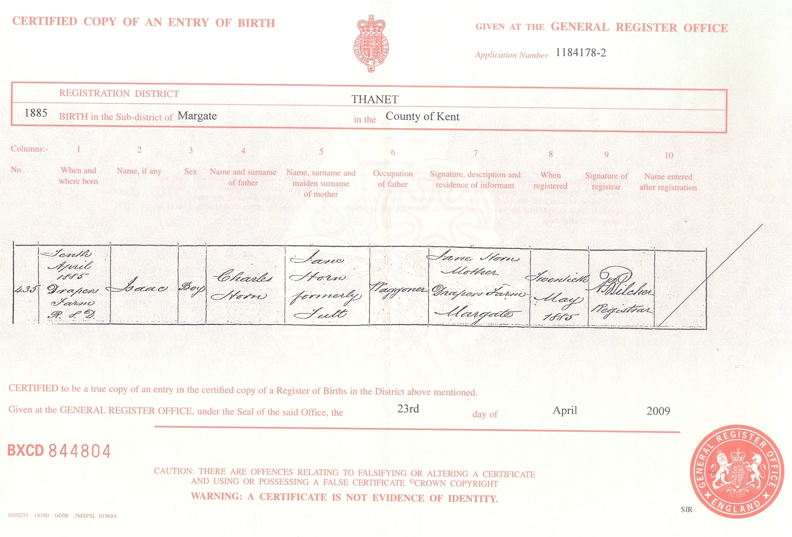
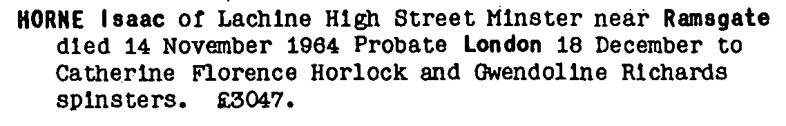
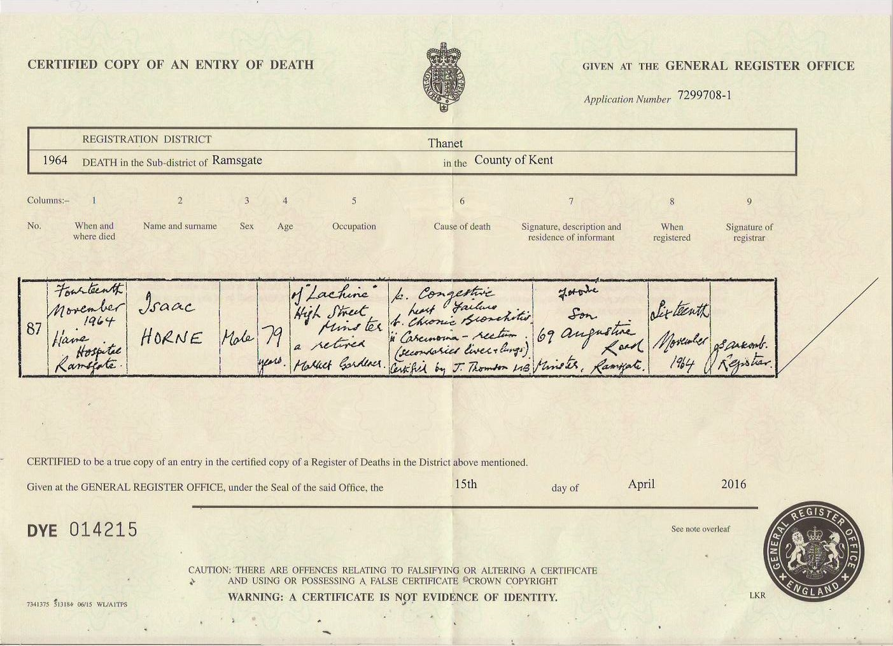
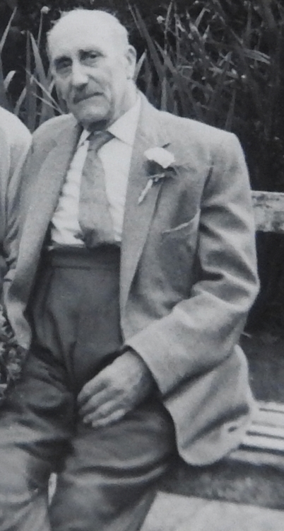
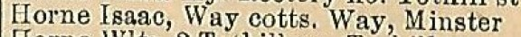
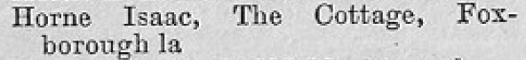
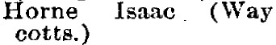
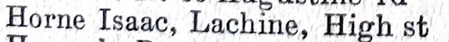
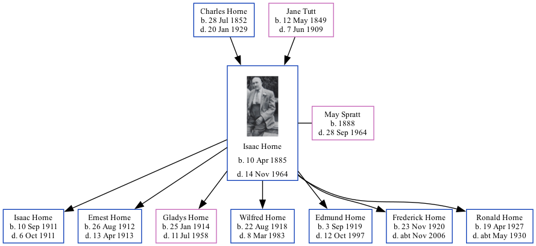

Isaac Horne 1885 - 1964
[ Home ] | [ Calendar ] | [ Surnames Index ] | [ Family History ]A hay trusser & thatcher heavy worker market gardener, vanman and thatcher and the 2nd of 3 children of Charles Horne (a waggoner on a farm) and Jane Tutt (a laundress), Isaac Horne, the grandfather of <a href="I1.html">Nigel Horne</a>, was born in Drapers Farm, Margate, Kent, England on Apr 10, 1885<span class="citation">1,2,3,4,5,6,7,8</span> and married May Spratt (with whom he had 7 children: <a href="I16.html">Isaac George</a>, <a href="I17.html">Ernest John</a>, <a href="I15.html">Gladys Jane</a>, <a href="I13.html">Wilfred George</a>, <a href="I4.html">Edmund Frank</a>, <a href="I14.html">Frederick Norman</a> and <a href="I10.html">Ronald Leonard</a>) at All Saints Church, Westbrook, Margate, Kent, England on Jul 2, 1910<span class="citation">12</span>.</p><p>Isaac spent all of his life in Kent, England. Throughout his life, he lived in several places around the county: at Drapers Cottage in Margate on Apr 5, 1891<span class="citation">15</span>; at 15 Haine Cottages, St Lawrence, Thanet on Mar 31, 1901<span class="citation">16</span>; at 4 Newington Terrace, St Lawrence, Thanet on Apr 2, 1911<span class="citation">17</span>; at Pansy Cottage, Way, Minster, Thanet on Jun 19, 1921<span class="citation">8</span>; at Way Cottages, Minster, Thanet on Aug 28, 1931, in 1935, in 1936 and on Sep 29, 1939<span class="citation">4</span>; on The Cottage, Foxborough Lane, Minster, Thanet in 1955<span class="citation">13</span> and in 1960; and at Lachine, 22 High Street, Minster, Thanet in 1963<span class="citation">14</span> and in 1964. Isaac In 1921 he was working at Own Account.<p>He died on Nov 14, 1964 in Haine Hospital, Ramsgate, Kent<span class="citation">9,10,11</span> (heart failure; bronchitis; carcenoma of the rectum and secondary in liver and lungs) and was buried on Minster Cemetery, Tothill Street, Minster, Thanet, Kent in 1964.
Parents
- Charles was born on Jul 28, 1852
- Jane was born on May 12, 1849
Children
- Isaac George was born on Sep 10, 1911
- Ernest John was born on Aug 26, 1912
- Gladys Jane was born on Jan 25, 1914
- Wilfred George was born on Aug 22, 1918
- Edmund Frank was born on Sep 3, 1919
- Frederick Norman was born on Nov 23, 1920
- Ronald Leonard was born on Apr 19, 1927
Citations
- 1891 England Census Online publication - Provo, UT, USA: The Generations Network, Inc., 2005.Original data - Census Returns of England and Wales, 1891. Kew, Surrey, England: The National Archives of the UK (TNA): Public Record Office (PRO), 1891. Data imaged from The National
- 1901 England Census Online publication - Provo, UT, USA: The Generations Network, Inc., 2005.Original data - Census Returns of England and Wales, 1901. Kew, Surrey, England: The National Archives of the UK (TNA): Public Record Office (PRO), 1901. Data imaged from the National
- 1911 England Census Online publication - Provo, UT, USA: Ancestry.com Operations, Inc., 2011.Original data - Census Returns of England and Wales, 1911. Kew, Surrey, England: The National Archives of the UK (TNA), 1911. Data imaged from the National Archives, London, England.
- 1939 Register - Findmypast (was the head of the household)
- England & Wales, FreeBMD Birth Index, 1837-1915 Online publication - Provo, UT, USA: The Generations Network, Inc., 2006.Original data - General Register Office. England and Wales Civil Registration Indexes. London, England: General Register Office. © Crown copyright. Published by permission of the Cont
- Other
- Volume: 2A; Page: 893; Line Number: 255; Record set: England & Wales births 1837-2006; Subcategory: Births & baptisms; Category: Birth, Marriage & Death (Parish Registers); Collections from: United Kingdom;
- 1921 Census Of England & Wales - Findmypast (was age 36 and the head of the household)
- England & Wales Government Probate Death Index 1858-2019 - Findmypast
- England & Wales, Death Index: 1984-2005 Online publication - Provo, UT, USA: The Generations Network, Inc., 2007.Original data - General Register Office. England and Wales Civil Registration Indexes. London, England: General Register Office. © Crown copyright. Published by permission of the Cont
- England & Wales, National Probate Calendar (Index of Wills and Administrations),1861-1941 Online publication - Provo, UT, USA: Ancestry.com Operations Inc, 2010.Original data - Principal Probate Registry. Calendar of the Grants of Probate and Letters of Administration made in the Probate Registries of the High Court of Justice in England. Londo
- Other
- 1955 Kelly's Thanet Directory
- 1963 Kelly's Thanet Directory
- 1891 England, Wales & Scotland Census - Findmypast (was age 6 and the son of the head of the household)
- 1901 England, Wales & Scotland Census - Findmypast (was age 15 and the son of the head of the household)
- 1911 Census for England & Wales - Findmypast (was age 25 and the head of the household)
Notes
Also spelt Isac.
Media
isaac horne - may spratt - gladys horne - headstone

Isaac Horne

Isaac Horn - birth certificate

Isaac Horne - May Spratt - marriage certificate

Isaac Horne - probate

Isaac Horne - death certificate

Isaac Horne - 2

Thanet Times July 5, 1960

Kelly's Isle of Thanet Directory - 1936

1955 Kelly's Thanet Directory

1935 Kelly's Thanet Directory

1963 Kelly's Thanet Directory

England & Wales deaths 1837-2007 - BMD/D/1964/4/AZ/000410/183
1901 England, Wales & Scotland Census Transcription - GBC-1901-0007467101
1939 Register Transcription - TNA-R39-1820-1820H-015-06
1939 Register Transcription - TNA-R39-1820-1820H-015-08
England & Wales marriages 1837-2008 - BMD/M/1910/3/AZ/000478/041
1911 Census for England & Wales - GBC/1911/RG14/04525/0203/1
1939 Register Transcription - TNA-R39-1820-1820H-015-09
England Billion Graves cemetery index - US/BMD/BILLION/009414034
1939 Register Transcription - TNA-R39-1820-1820H-015-07
England & Wales Government Probate Death Index 1858-2019 - GBOR/GOVPROBATE/C/1964-1964/00116103
Kent Marriages And Banns - GBPRS/CANT/MAR/009518/1
Family Tree
Generated by Ged2Site. Last updated on Jul 20, 2025